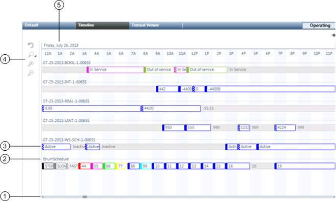

Timeline Viewer
Timeline Viewer allows you to view the details of multiple management station and field panel schedules simultaneously, spanning a range of time.
To do this, System Manager must be in Operating mode.
This section provides the general reference information on timeline viewer. To get started with procedures, navigate to the step by step section for timeline viewer.
Timeline Viewer Workspace
This section provides an overview of the Timeline Viewer Workspace.

| Name | Description |
1 | Time Range Scrollbar | Allows you to control the date range of schedules. |
2 | Schedule Name | Displays the name of the schedule with schedule details appearing on the row below it. |
3 | Schedule Details | Hovering on an interval displays a tool tip with schedule details. Intervals also use color coding and hatch marks to provide basic information at a glance. Schedule details are view only. |
4 | Timeline Toolbar | Includes the following time-adjustment controls: |
5 | Date | Displays the date you are currently viewing. The date changes when you use either the Preset Time Spans or the Time Range scrollbar. |
Time Range Scrollbar
The Time Range scrollbar offers another way to control the displayed time span of schedules.
The shorter the time span—one day, for instance—the more detail you can view.
The longer the time span—one month, for instance—the less detail you can view.
The Time Range scrollbar contains a repeat function to make working with time ranges easier.
Clicking to the left or right of the slider on the scrollbar moves it in the selected direction for the corresponding time range.
Preset Time Periods
You can click the Zoom to Preset Time Period icon on the Timeline Viewer toolbar to select how much of the timeline is visible at once.
The choices are 12 hours, 1 day, 3 days, 1 week, 2 weeks, or 1 month.
The Timeline Viewer accepts a maximum of 50 schedules. The fewer schedules you view, the more options you have with the preset time periods.
The more schedules you view, the fewer options you have with the preset time periods.
View Details in the Timeline Viewer
By moving your cursor over an entry in the Timeline Viewer, you can view schedule details, but you cannot edit them.
Double-clicking a schedule’s details, however, sends the selection to the Default tab where you can edit the schedule.
Color Indicators
A gray interval indicates that nothing has been scheduled for that period, and the schedule is in its default mode of operation.
Other colors in the intervals indicate that something has been scheduled.
- If colors are assigned to the schedule from the text table, they will appear in the Timeline Viewer.
- If colors are not assigned to the schedule from the text table, they will default to blue.
Interval Types
Intervals are classified as one of four types:
- Default: not scheduled intervals (gray)
- Normal: scheduled intervals (solid colors)
- Exception: scheduled overrides to the normal schedule intervals (color-coded hatch marks)
- Inactive: not active interval (gray hatch marks)